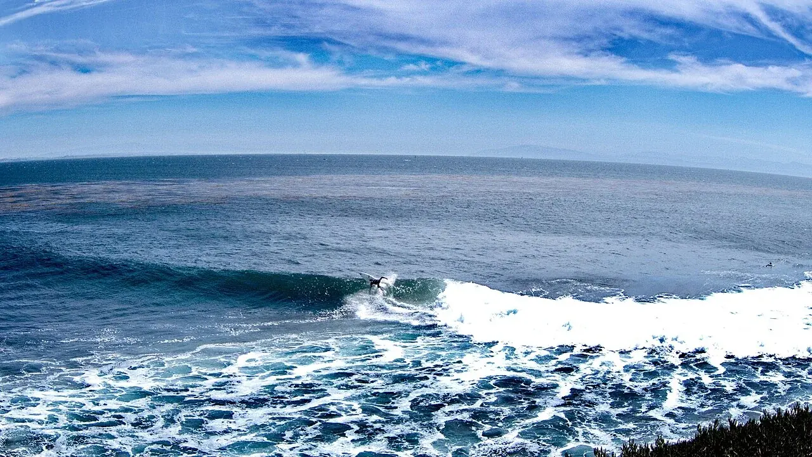

Steamer Lane
Santa Cruz, États-Unis · surf

Un spot de Santa Cruz sous le phare de Lighthouse Point. L’histoire du surf local se raconte aussi dans le musée voisin.
- Lieu
- Santa Cruz, États-Unis
- Niveau
- Variable selon les conditions
- Activités
- surf
- Type d'eau
- Mer / océan
- Coordonnées
- 36.95, -122.03 (position approximative du secteur)
Ouvrir dans Ocean Buddy Télécharger sur l'App Store
Source : Visit Santa Cruz County.